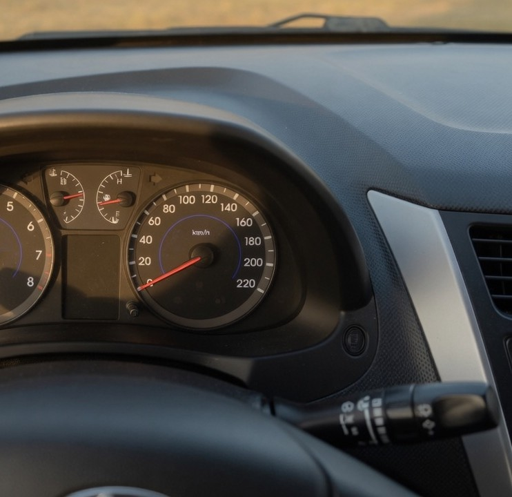

Перед выездом
Сначала обходит машину
-
01
Осмотр
Смотрит шины и нет ли чего под колёсами. Двери и багажник закрыты.
-
02
Запуск
Даёт мотору поработать около полминуты и слушает, ровно ли он работает.
-
03
В городе
Держит дистанцию. Если в машине жарко, включает кондиционер.


У реки он останавливается ненадолго и едет обратно.
Обратно
Дома записывает километры
В апреле до реки было 46 километров. На обратном пути на стекло села пыльца, Кирилл один раз включил дворники.
Если вечером пошёл дождь, он всё равно ставит машину во двор и вешает ключ на крючок.